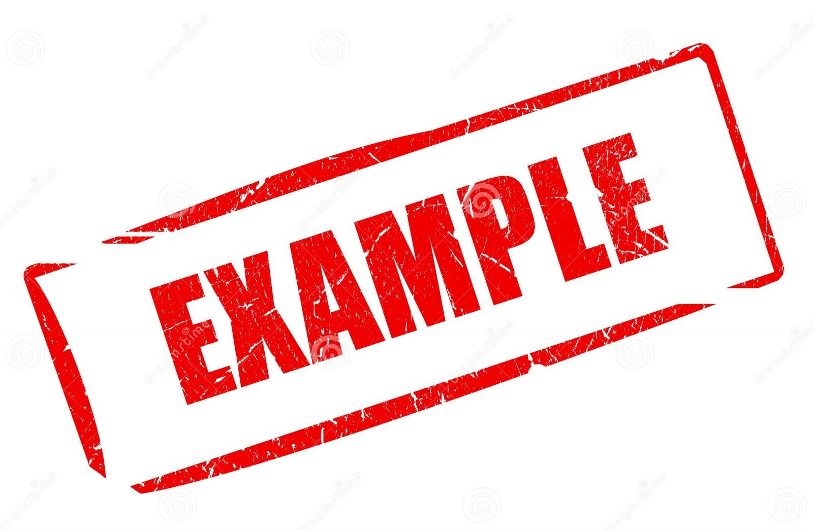

Tags:
As tags em HTML são utilizadas para estruturar um conteúdo, definir a aparência e o comportamente dos elementos em uma página web. A maioria das tags seguem o padrão de abertura e fechamento, mas existem tags sem fechamento.
Tags de Estruturação:
<html></html> <!--Define o documento HTML como um todo-->
<head></head> <!--Responsável por conter informações sobre a página (metadados), títulos e links CSS-->
<title></title> <!--Define o título da página, exibido na aba de navegação-->
<body></body> <!--Contém todo o conteúdo visível da página-->
<header></header> <!--Define todo o conteúdo do cabeçalho, geralmente a navegação-->
<main></main> <!--Define o conteúdo central da página, geralmente os mais importantes-->
<footer></footer> <!--Define o conteúdo do rodapé, geralmente informações extras e de domínio-->
<div></div> <!--É uma tag genérica e não segue uma regra semântica, útil em diversas situações-->
<span></span> <!--Assim como <div> não segue uma regra semântica, útil para estilizar partes específicas de texto-->
Tags de Texto:
<h1></h1> <!--Define títulos em diferentes níveis, do <h1> (maior) até o <h6> (menor)-->
<p></p> <!--Define um parágrafo-->
<b></b> <!--Define um texto em negrito, ênfase-->
<i></i> <!--Define um texto em itálico, ênfase-->
<br> <!--Insere uma quebra de linha-->
Tags de Links:
<img> <!--Insere uma imagem a página-->
<a></a> <!--Insere um link a página-->
Tags de Lista:
<ul></ul> <!--Cria uma lista não ordenada (com marcadores) e contém os itens de lista-->
<ol></ol> <!--Cria uma lista ordenada (com números) e também contém os itens de lista-->
<li></li> <!--Define os itens da lista-->
Tags de Tabela:
<table></table> <!--Define uma tabela-->
<tr></tr> <!--Define uma linha da tabela-->
<td></td> <!--Define uma cédula de dados dentro da tabela-->
Atributos:
Os atributos em HTML tem o objetivo de modificar o comportamento e a aparência dos elementos na tag, configurar seus valores e definir como eles interagem com o usuário ou com outros elementos. Existem diversos atributos para tags e muitas tags tem seus próprios atributos.
Exemplos de Atributos:
<div class=""> </div> <!--Atribui uma classe ao elemento (utilizada para referenciar muitos elementos)-->
<div id=""> </div> <!--Atribui um id ao elemento (utilizada para referenciar um único elemento ou exclusivamente para utilização do javascript)-->
<div lang=""> </div> <!--Define o idioma principal do elemento-->
<div alt=""> </div> <!--Muito utilizado na tag de imagem, pois define um texto alternativo, SEO-->
<div title=""> </div> <!--Exibe um texto ao passar o mouse-->
<div href=""> </div> <!--Usado na tag de link para definir uma URL-->
<div src=""> </div> <!--Usado em tags de imagem e scripts, para especificar o caminho do arquivo e mostra-lo-->
Formulários:
O objetivo principal dos formulários em HTML é coletar dados do usuário e enviá-los para algum sistema interessado. É amplamente utilizado em páginas web para a captura de informações, como: cadastros, logins, pesquisas, comentários e etc.
Principais Tags:
<form></form> <!--Cria um formulário para entrada de dados-->
<input></input> <!--Define um campo de entrada de dados-->
<label></label> <!--Serve como título para a tag <input>-->
<select></select> <!--Cria uma caixa de seleção de itens-->
<option></option> <!--Referencia um item dentro <select>-->
<button></button> <!--Cria um botão interativo-->
Principais Atributos:
<input placeholder=""> <!--Usado em tags de campo de entrada para dar mais informações-->
<input value=""> <!--Define o valor padrão de uma tag (campo ou botão)-->
<input type=""> <!--Geralmente utilizado em formulários, definindo o tipo e o formato do objeto-->
Para o atributo "type" existem diversos formatos, os principais deles são: email (caixa de verificação), password (aculta senha), text (caixa de texto), CheckBox (caixas selecionável), radio (circulo selecionável), range (faixa arrastável), number (contador de números), file (seleciona arquivo) e date (calendário selecionável).
Exemplo de Uso:
Exemplo de Formulário
<form>
<label for="email" style="display: block;">E-mail:</label>
<input type="email" id="email" placeholder="Digite seu email">
<label for="password" style="display: block;">E-mail:</label>
<input type="password" id="password" placeholder="Digite seu email">
<br><br>
<button>Entrar</button>
</form>
Veja alguns exemplos mais completos de formulário aqui!
Tags de Mídia:
Como o título já diz, as tags de mídia são responsáveis por definir as mídias que poderam ser visualizadas na página web. As mídias mais comuns de serem encontradas em sites são: imagens, vídeos e audios.
<img> <!--Responsável por mostrar imagens na página-->
<video> </video> <!--Responsável por mostrar vídeos na página-->
<audio> </audio> <!--Responsável por mostrar audios na página-->
<iframe> </iframe> <!--Apesar de não ser uma tag de mídia pode ser um adicional visualizável-->
Ambas as tags utilizam o atributo "src" para mostrar o caminho da mídia a ser mostrada.
Exemplo de Uso:
Exemplo de Imagem e Áudio
Clique para interagir com o áudio
<src="../assets/images/imgExample.jpg" class="imgWidth"">
<audio id="audio">
<source src="..Midias/Ring05.waw" type="audio/wav">
Seu navegador não possui suporte para esse audio!
</source>
</audio>
<button onclick="document.getElementById('audio').play()">Play</button>
<button onclick="document.getElementById('audio').Pause()">Pause</button>
Style, Script e Âncora:
A tag <style> é responsável por armazenar informações relacionadas a estilização da página, pode ser inserida diretamente no "head", mas é uma boa prática criar um arquivo separado e linca-lo posteriormente. Já a tag <script> é responsável por conter instruções relacionadas ao funcionamento da página, também poder ser inserida diretamente no "head", mas é uma boa prática criar um arquivo separado e linca-lo posteriormente no final do <body>. Por fim a tag <a> é responsável por definir um link navegável entre páginas.
<style> body { background-color: red;} </style> <!--Deixa a cor de fundo da página vermelho-->
<script> alert("Exemplo de script js") </script> <!--Responsável por mostrar uma caixa de alerta ao abrir a página-->
<p>Acesse o <a href="https://google.com" target="_blank">link</a>!<p> <!--Gera um link de navegação do Google em uma nova aba-->
Seletores CSS:
Os seletores CSS mais utilizados são "id" (representado por #), "class" (presentado por .) e a própria "tag" (presentada pelo nome da tag).
<div id="form"> </div> <!--Para elemento único-->
<div class="topics"> </div> <!--Para conjunto de elementos-->
<body> </body> <!--Para todas da mesma tag-->
#form {
text-align: start;
width: 100%;
display: flex;
flex-direction: row;
justify-content: space-around;
}
.topics {
color: rgb(150, 150, 150);
}
body {
background-color: rgba(255, 255, 255, .1);
}
Link CSS:
Fazer o link de estilo CSS de um arquivo externo é uma das melhores práticas que o programador deve utilizar, com isso é possível organizar os códigos de forma mais dinâmica e armônica e reutilizar os mesmo estilos em outras páginas. Esse link CSS será inserido no "head" da seguinte maneira:
<head>
<link rel="stylesheet" hrf="./style.css">
<head>
Sendo o "rel" responsável por definir o tipo de link como sendo "stylesheet" (Folha de estilo) e "hrf" definindo o caminho em que essa folha de estilo se encontra. Com isso todos o estilos definidos no arquivo seram utilizados na página.
Unidades de Medida:
As unidades de medida em CSS são divididas em dois tipos, absolutas (define o seu próprio valor) e relativas (seu valor depende do valor da tag pai). Existem diversas unidades de medida em css, porém as mais utilizadas delas são:
/*Unidade de Medida absoluta*/
body {
font-size: 20px; /*20 pixels da tela*/
}
/*Unidades de Medida Relativa*/
div {
font-size: 2rem; /*Refere-se a duas unidades do valor da tag "html", 2 x 16px = 32px*/
font-size: 1em; /*Refere-se a uma unidade do valor da tag pai "body", 1 x 20px = 20px*/
width: 50%; /*Define que o tamanho da largura de "p" é a metade da largura da tag pai "body"*/
}
Width e Heigth:
Ainda relacionado ao tópico anterior, para definirmos a largura e a altura de uma tag podemos fazer uso das unidades de medida absolutas e relativas. Para este tópico utilizaremos a unidade de medida relativa %(porcentagem), definindo o valor da tag filha de acordo com o valor da tag pai.
Exemplos de Largura e Altura
<div class="mainTagWH">
<div class="supportingTagWH">Filho</div>
</div>
.mainTagWH {
width: 120px;
heigth: 120px;
background-color: green;
}
.supportingTagWH {
width: 50%
heigth: 50%
background-color: yellow;
color: black;
}
CSS Reset:
Por padrão todos os navegadores tem uma estilização própria inicial para as páginas html, que podem interferir diretamente em estilizações futuras aplicadas a estas páginas. Por isso antes de dar início a estilização de toda página é necessário fazer um "Reset" no arquivo CSS.
Exemplo de Reset Básico:
* {
margin: 0;
padding: 0;
text-decoration: none;
}
O símbolo de * (asterisco) representa todos os elementos contidos no html, onde teram suas margens internas e externas e decoração de textos resetadas.
Box Model:
É importante sabermos que toda página html é constituida pela organização de diversos blocos de conteúdos, uns dentro de outros blocos e uns ao lado de outros blocos. E para que possamos organizar esses blocos de forma adequada precisamos aprender sobre as propriedades dos blocos, as principais propriedades deles são "margin, padding e border".
- margin: refere-se ao distânciamento de um elemento em relação aos elementos que estão fora dele. Tipos de uso: "margin: (n)px;" ou "margin: (n)px (n)px (n)px (n)px;" (para todos os lados), "margin: (n)px (n)px;" (top-botton e left-rigth), "margin-top/rigth/botton/left: (n)px;" (para lados únicos).
- padding: refere-se ao distânciamento de um elemento em relação aos elementos que estão dentro dele. Tipos de uso: segue a mesma lógica de "margin".
- border: refere-se ao estilo da borda do bloco. Estrutura: "border: tamanho(px ou %) tipo(solid, double, dotted, dashed...) cor(white, black...)" e "border-radius: tamanho do arredondamento (px ou %)"
Propriedades de Bloco
.mainTagBM {
background-color: green;
padding: 5px;
border-radius: 15px;
}
.supportingTagOneBM {
background-color: yellow;
margin: 15px 7px;
border: 5px dashed black;
}
.supportingTagTwoBM {
background-color: red;
margin: 50px 20px;
border-radius: 50%;
border: 7px double white
}
Position:
Outro mecanismo de estilização do CSS esta diretamente relacionado a como e onde podemos posicionar um elemento na página. Antes de vermos os tipos de posicionamentos é importante sabermos que podemos definir o tamanho da tela por meio de "vw" (no width - para largura) e "vh" (no height - para altura) em porcentagem. Existem 5 tipos diferentes de posicionamento:
- static: define que a posição do elemento vai estar na posição padrão em relação ao limite de top/botton/left/right da tela.
- fixed: define que a posição do elemento vai estar fixa em relação ao limite de top/botton/left/right da tela.
- stiky: define que a posição do elemento vai ficar fixa em relação ao limite alcançado de top/botton/left/right da tela.
- relative: define que a posição do elemento vai ser relativa ao limite de top/botton/left/right do bloco vizinho, semelhante a padding.
- absolute: em um primeiro momento se estiver inserido dentro de um elemento "static" levará em consideração os limites de top/botton/left/right da tela. Em um segundo momento se estiver inserido dentro de um elemento "relative" levará em considerção os limites de top/botton/left/right do elemento pai.
Background:
Existem diferentes maneira de adicionar um fundo a uma página/tag, as principais e mais utilizadas delas são:
- background/background-color: utilizado para valores de cor [red, rgb(25, 25, 25) rgba(20, 20, 20, 5)]
- background-image: utilizado para valores de imagem [url('link remoto ou local da imagem')]
- background-repeat: para definir o tipo de repetição do valor (repeat, no-repeat, around...)
- background-size: para definir o tamanho da imagem (auto, contain, cover...)
- background-position para definir a posição do valor (x% y%).
Propriedades de Fundo
.bodyB {
background-color: green;
height: 240px;
width: 190px;
display: flex;
align-items: center;
justify-content: center;
}
.imgB {
background-image: url('../assets/images/Project_Zomboid_Capa.jpg');
background-repeat: no-repeat; /*Não se repete para ocupar o espaço*/
background-size: cover; /*Ocupa todo o espaço da tag*/
background-position: 0% 12%; /*Ajusta o Topo e a Base*/
height: 200px;
width: 150px;
}
Cores:
Existem 4 formas principais de representação de cores no CSS, sendo:
- Color: você pode simplismente chamar a cor pelo seu nome.
- #XXX ou #XXXXXX: é a forma hexadecimal de representar uma cor.
- rgb(XX, XX, XX): tem a mesma mecânica da hexadecimal de 6 digitos anterior.
- rgba(XX, XX, XX, Y): funciona igualmente ao rgb, porém adicionando opacidade em Y, podendo alterar sua trânslucidez entre 0 e 1.
Exemplos de Uso:
.firstColorC {
background-color: #123;
color: white;
}
.secondColorC {
background-color: rgb(0, 50, 255);
color: gray;
}
.thirdColorC {
background-color: rgba(0, 55, 255, 0.5);
color: black;
}
Pseudo Classes e Pseudo Elementos:
As Pseudo Classes (:) são utilizadas para estilizar o estado especial de um elemento, exemplos:
- hover: para alterar o elemento quando passado o mouse.
- disabled: para inputs quando desabilitados.
- focus: para dar foco no input quando clicado.
Já os Pseudo Elementos (::) são utilizados para estilizar partes específicas de um elemento, exemplos:
- before: adicionar um novo elemento/estilo antes do elemento principal.
- after: adicionar um novo elemento/estilo depois do elemento principal.
Exemplos de Uso:
.divHoverPCPE {
background-color: rgb(0, 50, 255);
}
.divHoverPCPE:hover {
background-color: green;
}
.inputFocusPCPE:focus {
background-color: rgb(200, 200, 200);
}
.divBeforePCPE::before {
content: '→';
}
.divAfterPCPE::after {
content: '←';
}
Display:
O display no css é a forma como um elemento será renderizado na tela do navegador, controlando seu layout e comportamento em relação aos outros elementos na tela. Exemplos comuns são:
- inline: coloca elementos lado a lado, porém perdem a propriedade de tamanho.
- inline-block: também coloca elementos lado a lado, mas não perdem a propriedade de tamanho.
- block: estilo padrão de display, adiciona quebra de linha depois de cada elemento.
- none: aculta os elementos por não existir nenhum tipo de display.
Existem também os display Flex e Grid, por serem mais complexos teram tópicos separados a seguir.
Exemplos de Uso:
.displayBlockD {
display: block;
}
.displayInlineD {
display: inline;
}
.displayInlineBlockD {
display: inline-block;
}
Display Flex:
Será adicionado na tag pai e as suas alterações seram direcionadas as tags filhas. Alguns propriedades de estilização são:
"display: flex": alinha por padrão os itens horizontalmente, inline-block.
flex-direction: responsável por determinar a direção em que os itens estaram (horizontalmente/vertical) e a sua ordem (fluxo normal/invertido). Tipos de valores:
- row: ordena horizontalmente (em linha).
- row-reverse: horizontalmente invertido.
- column: ordena verticalmente (em coluna).
- column-reverse: verticalmente invertido.
justify-content: Ajusta os itens conforme definido no "flex-direction", quando "row" ajusta no eixo X (horizontal), quando "column" ajusta no eixo Y (vertical). Também é responsável por definir espaçamento entre os itens. Tipos de valores:
- flex-start: ajusta os itens no inicio.
- flex-end: ajusta os itens no fim.
- center: ajusta os itens no centro.
- space-between: separa ao máximo os itens entre si.
- space-around: separa ao máximo os itens entre si e as laterais, ambos não igualmente.
- space-evenly: separa ao máximo os itens entre si e as laterais, ambos igualmente.
align-items: Alinha os itens conforme definido no "flex-direction", quando "row" ajusta no eixo Y (vertical), quando "column" ajusta no eixo X (horizontal). Tipos de valores:
- start: ajusta os itens no inicio.
- end: ajusta os itens no fim.
- center: ajusta os itens no centro.
Exemplos de Uso:
.mainTagOneDF {
background-color: blue;
display: flex;
flex-direction: row;
justify-content: space-between;
align-items: start;
}
.mainTagTwoDF {
background-color: green;
display: flex;
flex-direction: column;
justify-content: space-around;
align-items: center;
}
.supportingTagDF {
background-color: white;
border: solid 3px red;
display: flex;
justify-content: center;
align-items: center;
}
Display Grid:
É utilizado basicamentepara fazer o posicionamento dos elementos em grade. Algumas propriedades de estilização são:
- "display: grid": alinha por padrão os itens verticalmente, em uma coluna única.
- grid-template-columns: vai determinar a quantidade de colunas de itens na tag pai. Seu formato pode ser "Xfr Yfr Zfr..." onde a quantidade de "fr" determina a quantidade de colunas e "X, Y e Z" determinam em números a proporção que a coluna terá em relação as outras colunas. Outros formato são: "X% Y% Z%" e "repeat(3, 1fr)".
- grid-template-rows: vai determinar a quantidade de colunas de itens na tag pai. Seu formato pode ser "Xfr Yfr Zfr..." onde a quantidade de "fr" determina a quantidade de linhas e "X, Y e Z" determinam em números a proporção que a linhas terá em relação as outras colunas. Outros formato são: "X% Y% Z%" e "repeat(3, 1fr)".
- column-gap: ajusta o distanciamento entre as colunas.
- row-gap: ajusta o distanciamento entre as linhas.
Atenção!!! Na propriedade "grid-template-columns" quando a quantidade de elementos excede a quantidade de colunas automaticamente o CSS cria uma nova linha e adiciona o elemento abaixo das colunas anteriores. Porém na propriedade "grid-template-rows" o mesmo não ocorre com as colunas, o CSS não criará uma nova coluna para adicionar o item restante, ele criará uma nova linha para adicioná-lo.
Exemplos de Uso:
.mainTagOneDG {
background-color: blue;
display: grid;
grid-template-columns: 1fr 1fr 1fr;
column-gap: 10px;
}
.mainTagTwoDG {
background-color: green;
display: grid;
grid-template-columns: 50% 50%;
grid-template-rows: repeat(2, 1fr); /*Atenção Aqui!*/
row-gap: 25px;
}
.supportingTagDG {
background-color: white;
border: solid 3px red;
width: 20px;
height: 20px;
}
Keyframes:
O keyframes é uma propriedade do css muito utilizada para fazer animações em tela, controlando as etapas em uma sequência e definindo estilos CSS para pontos ao longo dessa sequência. Os pontos de mudança da animação podem ser definidos por:
- "from {estilo inicial}" + "to {estilo final}"
- "0% {estilo inicial}" + "25% {estilo intermediário}" + "50% {estilo intermediário}" + "100% {estilo final}"
Sendo "from/to" para dois pontos únicos de animação (inicial e final) e "X%/(n)%/Y%" para vários pontos de animação (inicial, (n)intermediários e final).
Exemplos de Uso:
.mainTagKF {
width: 250px;
}
.supportingTagKF {
width: 75px; height: 75px;
position: relative;
animation: animationDiv 10s infinite;
}
@keyframes animationDiv {
0% { top: 0px; left: 0px; background-color: black; color: aqua; }
25% { top: 0px; left: 175px; background-color: aqua; color: black; }
50% { top: 275px; left: 175px; background-color: black; color: aqua; }
75% { top: 275px; left: 0px; background-color: aqua; color: black; }
100% { top: 0px; left: 0px; background-color: black; color: aqua; }
}
Media Query:
Antes de entendermos o funcionamente da Media Query precisamos primeiramente sabermos o significado de Responsividade e Break Points.
Responsividade: é um termo utilizado no desenvolvimento para definir a forma visual de como um determinado elemento/site se comporta/adapta em diferentes tipos de telas.
Break Points: refere-se aos pontos de quebra de dimensão (largura/altura) em relação ao tamanho da tela em que os elementos/site estam sendo exibidos. Alguns pontos de quebra mais comuns são:
- 480px: para smartphones
- 768px: para tablets
- 1024px: para desktops
A Media Query em CSS é responsável por dar responsividade aos sites com base nesses break points. Veja a baixo alguns exemplos:
/*Mobile First*/
/*Layouts de smartphone e inferiores*/
.body {
font-size: 16px;
}
/*Layout mínimo para tablet*/
@media(min-width: 768px){
.body {
font-size: 18px;
}
}
/*Layout mínimo para desktop e superiores*/
@media(min-width: 1024px){
.body {
font-size: 20px;
}
}
/*Desktop First*/
/*Layouts de desktop e superiores*/
.body {
font-size: 20px;
}
/*Layout máximo para tablet*/
@media(max-width: 1024px){
.body {
font-size: 18px;
}
}
/*Layout máximo para smartphone e inferiores*/
@media(max-width: 768px){
.body {
font-size: 16px;
}
}
O Mobile First é maneira de desenvolver uma aplicação pensando no formato inicial para dispositivos móveis, como smartphone e tablets pequenos. Já o Desktop First é maneira de desenvolver uma aplicação pensando no formato inicial para desktops.